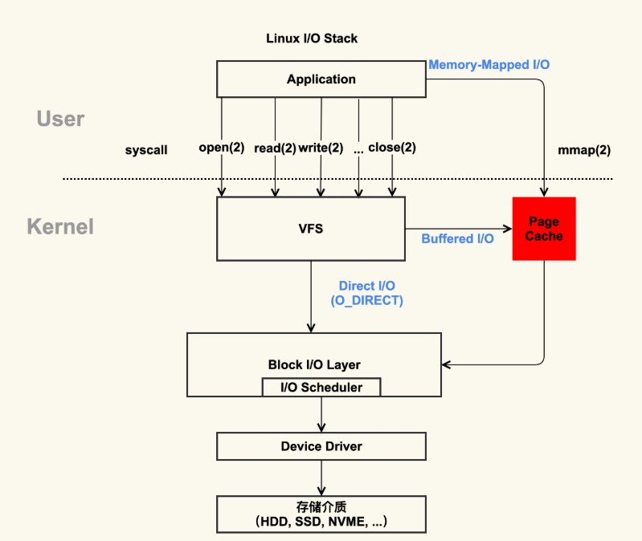

Linux内存子系统-Page Cache
pagecache是什么
1 | cat /proc/meminfo |
Page Cache = Buffers + Cached + SwapCached = Active(file) + Inactive(file) + Shmem + SwapCached

/proc/meminfo的解释见如下网站https://www.kernel.org/doc/Documentation/filesystems/proc.rst
在 Page Cache 中，Active(file)+Inactive(file) 是 File-backed page（与文件对应的内存页），是你最需要关注的部分。因为你平时用的 mmap() 内存映射方式和 buffered I/O 来消耗的内存就属于这部分。
而 SwapCached 是在打开了 Swap 分区后，把 Inactive(anon)+Active(anon) 这两项里的匿名页给交换到磁盘（swap out），然后再读入到内存（swap in）后分配的内存。由于读入到内存后原来的 Swap File 还在，所以 SwapCached 也可以认为是 File-backed page，即属于 Page Cache。这样做的目的也是为了减少 I/O。

SwapCached 只在 Swap 分区打开的情况下才会有，建议在生产环境中关闭 Swap 分区，因为 Swap 过程产生的 I/O 会很容易引起性能抖动。
下面解释一下free输出
buff/cache = Buffers + Cached + SReclaimable 1
2
3
4free -k
total used free shared buff/cache available
Mem: 7926580 7277960 492392 10000 156228 430680
Swap: 8224764 380748 7844016
| 指标 | 数据来源 (参考 /proc/meminfo) |
主要作用 |
|---|---|---|
Buffers |
Buffers值 |
临时存放原始磁盘块数据，用于优化对磁盘（块设备）的直接读写操作。 |
Cached |
Cached值 |
缓存从文件读取的数据（即页缓存/Page Cache），使得再次访问这些文件时可以直接从内存快速读取，无需访问磁盘。 |
SReclaimable |
SReclaimable值 |
属于 Slab 分配器 的一部分，记录内核对象（如目录项、inode 等）缓存中可以被回收占用的内存。指可以被回收的内核内存，包括 dentry 和 inode 等。 |
实际场景中的表现：通过 vmstat等工具可以观察它们的变化。例如，当使用 dd命令向磁盘分区直接写入大量数据时（如 dd if=/dev/urandom of=/dev/sdb1 …），会观察到 Buffers显著增长，因为这是对原始磁盘块的操作。而当读写普通文件时（如 dd if=/dev/urandom of=/tmp/file …），则会看到 Cached部分明显增加，因为这些数据被文件系统缓存了。
pagecache出现的意义
先看如何使用pagecache的方法
- 第一种，应用程序维护自己的 Cache 做更加细粒度的控制，比如 MySQL 就是这样做的，你可以参考MySQL Buffer Pool 。
- 第二种，使用 Direct I/O 来绕过 Page Cache。
pagecache的意义就是加速：标准 I/O 和内存映射会先把数据写入到 Page Cache，这样做会通过减少 I/O 次数来提升读写效率。
我们看一个具体的例子。首先，我们来生成一个 1G 大小的新文件，然后把 Page Cache 清空，确保文件内容不在内存中，以此来比较第一次读文件和第二次读文件耗时的差异。具体的流程如下。
1 | dd if=/dev/zero of=./dd.out bs=4096 count=((1024*256)) |
清空 Page Cache，需要先执行一下 sync 来将脏页同步到磁盘再去 drop cache。
1 | sync && echo 3 > /proc/sys/vm/drop_caches |
读两次文件，计算耗时 1
2
3
4
5
6
7
8
9time cat /home/yafang/test/dd.out &> /dev/null
real 0m5.733s
user 0m0.003s
sys 0m0.213s
time cat /home/yafang/test/dd.out &> /dev/null
real 0m0.132s
user 0m0.001s
sys 0m0.130s
通过这样详细的过程你可以看到，第二次读取文件的耗时远小于第一次的耗时，这是因为第一次是从磁盘来读取的内容，磁盘 I/O 是比较耗时的，而第二次读取的时候由于文件内容已经在第一次读取时被读到内存了，所以是直接从内存读取的数据，内存相比磁盘速度是快很多的。这就是 Page Cache 存在的意义：减少 I/O，提升应用的 I/O 速度。
pagecache机制
pagecache产生
Page Cache 的产生有两种不同的方式：
- Buffered I/O（标准 I/O）；
- Memory-Mapped I/O（存储映射 I/O）。

buffered/mmap都能产生 Page Cache，但是二者的还是有些差异的：标准 I/O 是写的 (write(2)) 用户缓冲区 (Userpace Page 对应的内存)，然后再将用户缓冲区里的数据拷贝到内核缓冲区 (Pagecache Page 对应的内存)；如果是读的 (read(2)) 话则是先从内核缓冲区拷贝到用户缓冲区，再从用户缓冲区读数据，也就是 buffer 和文件内容不存在任何映射关系。
对于存储映射 I/O 而言，则是直接将 Pagecache Page 给映射到用户地址空间，用户直接读写 Pagecache Page 中内容。
显然，存储映射 I/O 要比标准 I/O 效率高一些，毕竟少了“用户空间到内核空间互相拷贝”的过程。这也是很多应用开发者发现，为什么使用内存映射 I/O 比标准 I/O 方式性能要好一些的主要原因。
我们来用具体的例子演示一下 Page Cache 是如何“诞生”的，就以其中的标准 I/O 为例，因为这是我们最常使用的一种方式，如下是一个简单的示例脚本：